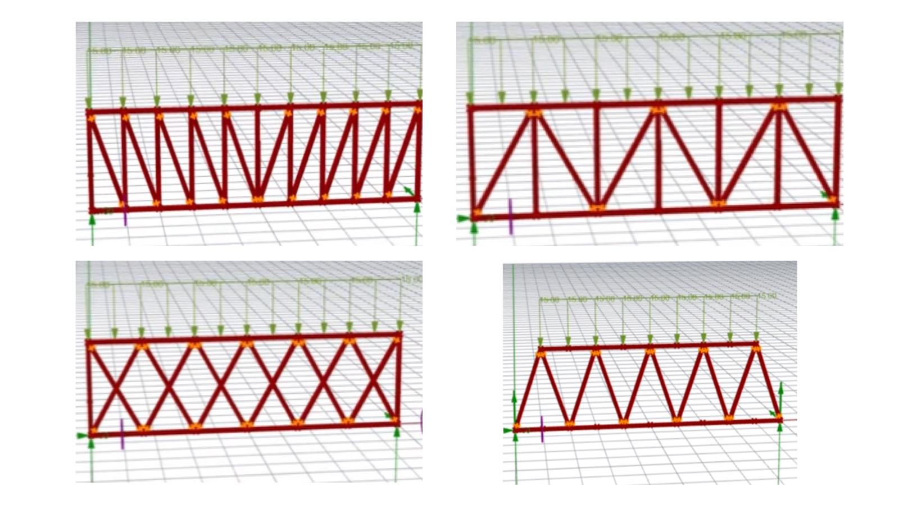
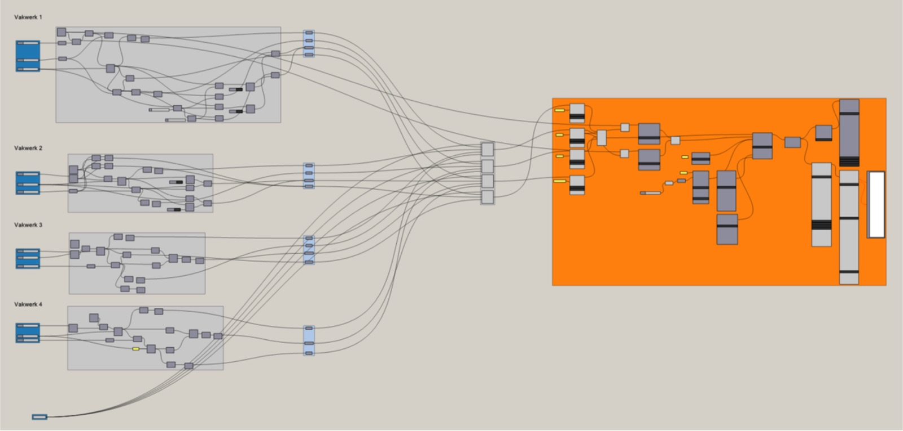

Project
Vakwerk in Grasshopper
Een parametrisch script met vier soorten vakwerken, doorgerekend met Karamba3D en geëxporteerd naar Technosoft Raamwerken, gemaakt op mijn leerplek bij ABT.

De opgave
Ik wilde zonder template een vakwerk bouwen dat meebeweegt met parameters en dat ik kan doorrekenen. Toen ik op 1 oktober begon bij ABT, kon ik alleen de parameters van een bestaand script aanpassen.
Het proces
Via de ThinkParametric-cursus leerde ik Grasshopper en Karamba3D beter begrijpen. Daarna bouwde ik zelfstandig een Pratt-vakwerk en koppelde ik dat aan Karamba3D. Ik maakte drie andere vakwerktypes en een keuzecomponent, zodat je de varianten één voor één kunt doorlopen en vergelijken.
- Grasshopper en Karamba3D leren via ThinkParametric
- Een Pratt-vakwerk bouwen met invoerparameters en koppelen aan Karamba3D
- Drie andere diagonaalpatronen toevoegen, met een keuzecomponent om te wisselen
- Een vakwerk als XML exporteren en importeren in Technosoft Raamwerken
Werk in detail
Grasshopper-script
Links staan de vier vakwerken (Vakwerk 1 tot en met 4), elk in een eigen groep. Ze komen samen in de keuzecomponent en gaan daarna naar het oranje deel, waar Karamba3D het gekozen vakwerk doorrekent.

Video
Het resultaat
Een script met meerdere invoerparameters en diagonale patronen, gekoppeld aan Karamba3D en Technosoft Raamwerken. Mijn begeleider noemde dit een belangrijke stap vooruit. Zijn verbeterpunt: meer parametrisch denken, zodat de geometrie als één geheel meebeweegt en het script makkelijk uitbreidbaar is.
Feedback
Feedback begeleider leerplek
Sinds 1 oktober ben je bij ABT gestart met je leerplek als deel van de Oosterhoff Digital team. Tijdens de speeddate sessie gaf je aan dat je doel was om je digitale skills te ontwikkelen vooral met Grasshopper en Python in het kader van constructief ontwerp. Wat mij betreft gaat je ontwikkeling tot nu toe de goede kant op.
Je bent bijna vanuit het niets begonnen en hebt je nu zo ver ontwikkeld dat je in Grasshopper kleine parametrische scripts kunt maken voor eenvoudige constructies. Het vakwerk-script dat je hebt gebouwd met meerdere invoerparameters en diagonale patronen plus koppeling met Karamba en Technosoft Raamwerken is een belangrijke stap vooruit. Nu begin je ook meer te doen met Python en ik vind deze ontwikkeling eveneens veelbelovend. Je hebt de basis vrij snel onder de knie gekregen.
Naarmate je verdergaat, zou ik het parametrisch denken meer in gedachten houden. Dat betekent dat je bij het ontwikkelen van Grasshopper-scripts niet alleen moet nadenken over wat werkt met de huidige parameters, maar ook over hoe het zich gedraagt wanneer je parameters wijzigt. Zorg ervoor dat de geometrie als één geheel meebeweegt, dat invoerwaarden worden hergebruikt en niet gedupliceerd, en dat je script zo is opgezet dat het gemakkelijk uitbreidbaar is, d.w.z. dat je er gemakkelijk dingen aan kunt toevoegen zonder grote wijzigingen in de bestaande workflow. Let bij Python op de structuur en overzichtelijkheid van de code, met name wat betreft variabelenamen en opmerkingen. Dit helpt je later bij het terugkijken op en leren van wat je hebt gedaan.
Tot nu toe heb je tijdens de leerplek een positieve houding getoond ten opzichte van leren en het uitproberen van nieuwe dingen. Je lijkt oprecht geïnteresseerd in digitale vaardigheden en bereid om dingen uit te proberen om jezelf verder te ontwikkelen. Je luistert aandachtig en volgt advies op. Je werkt best zelfstandig. Mijn feedback op dit gebied zou zijn om meer vragen te stellen en ook aan te geven of je iets nieuws of anders wilt zien, doen of uitproberen, zodat we kunnen bekijken hoe we dat kunnen regelen. Het doel van deze periode is gewoon te leren, niet alleen direct techniek maar ook van jouw collega's.
Over het algemeen vind ik je een prettige collega die goed in het team past. Je maakt in een goed tempo je ontwikkeling door. Ik kijk uit naar de rest van de leerplekperiode en ben ervan overtuigd dat je aan het einde een resultaat zult behalen waar je trots op kunt zijn.
Aangetoonde leerdoelen
-
1.3
Integreert en prototypeert digitale tools/technieken in innovatieve oplossingen voor opgaven in de gebouwde omgeving.
-
3.2
Toont een zelflerende houding in het eigen maken van zowel digitale vakbekwaamheid als softskills.
-
3.3
Signaleert technologische innovaties en eigent zich zelfstandig nieuwe tools en werkwijzen toe om de professionele praktijk te versterken.